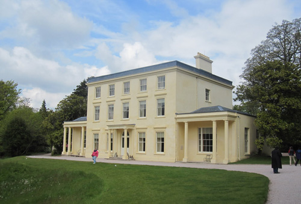
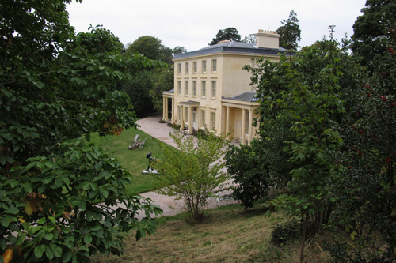
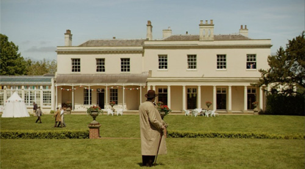
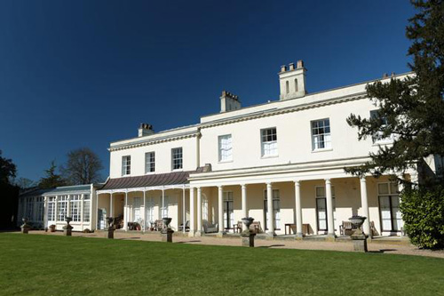
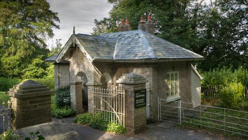
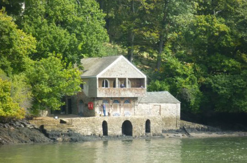
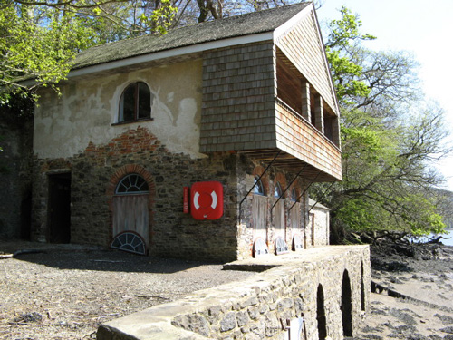
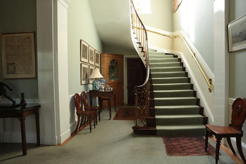
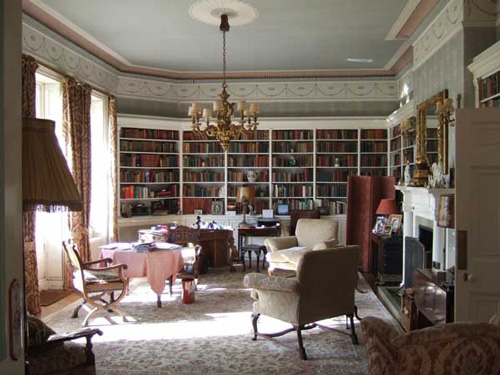
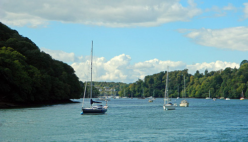

Agatha Christie's own summer residence (Greenway) was used as 'Nasse House'.

Oblique view of Greenway.

However, High Canons in Borehamwood in Hertfordshire was used as the back view of 'Nasse House'. Here, seen with Poirot in the foreground.

High Canons was also used as a location for 'The Avengers', 'Randall and Hopkirk (Deceased)' and the Vincent Price classic 'Doctor Phibes Rises Again'.

The Lodge at Greenway where the hitchhikers disembark and where Amy Folliat lives.

The Boat House at Greenway.

Side view of the Boat House.

High Canons - the staircase up which the false Hattie Stubbs is taken.

High Canons - the library where Poirot discusses the investigation.

The River Dart (between Dartmouth and Greenway) up which Etienne de Sousa sails his yacht to 'Nasse House'.